Après une navigation de 30 milles depuis Sunset Bay en Dominique, nous arrivons dans l’archipel des Saintes. Nous avions repéré à l’avance un mouillage qui nous paraissait idéal et bien sauvage, mais la houle du jour nous a obligé à nous déplacer vers l’anse Crawen au sud de terre de haut pour notre première nuit.
À peine l’ancre posée, Loann prépare son foil et part naviguer en wing dans la baie. Il n’y a que 12 nds de vent, mais cela suffit pour voler et explorer les alentours au coucher du soleil !
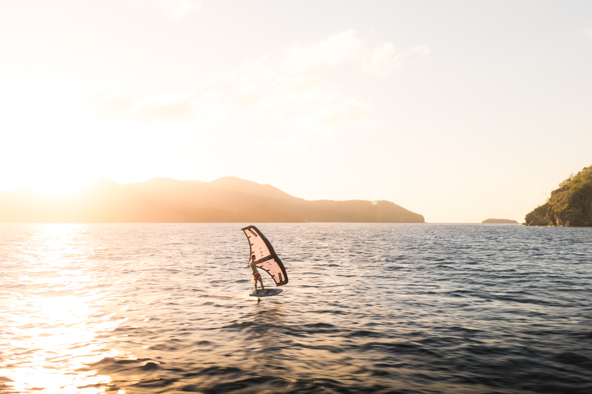
Le lendemain, nous partons explorer les environs sous-marins avec Félicien. Notre objectif est de ramener une langouste pour le déjeuner ! Après 20 min de bataille acharnée, nous finissons par en attraper une mais qui s’avère être grainée (porteuse d’œufs). Par bonne conscience, nous la relâchons pour qu’elle continue à proliférer.
En fin de journée, nous bougeons de l’autre côté de la pointe dans l’anse du pain de sucre, bien connue des touristes. Nous mouillons dans 20m d’une eau cristalline ! Le soir, nous ne louperons pas l’occasion de profiter du coucher de soleil sur la plage accompagné d’une petite rillettes de thon, royale !
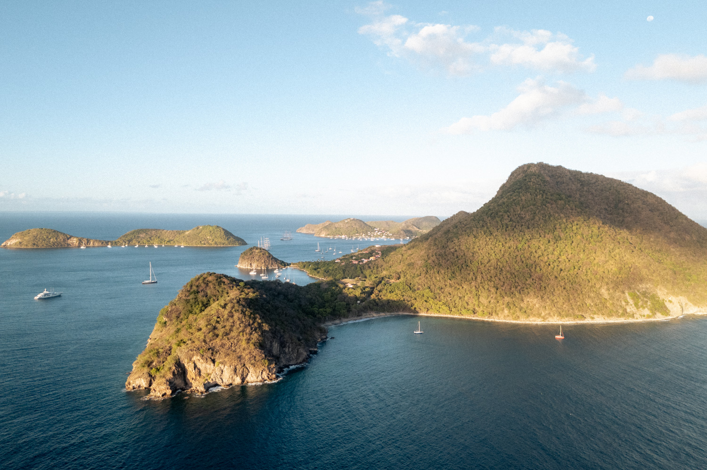
Avant de repartir de ce magnifique endroit, nous grimpons au sommet de l’île et pouvons apprécier la vue sur l’entièreté de l’archipel ! Aussitôt redescendus, nous grimpons dans l’annexe avec nos masques et nos tubas pour aller explorer l’épave d’une ancienne navette à passager. Elle se trouve entre 5 et 10m de profondeur et est extrêmement bien conservée. Nous nous amusons même à y rentrer pour admirer les rangées de sièges occupées maintenant par des coraux, c’est une drôle d’ambiance ! Notre seul regret sera sans doute de ne pas avoir embarqué de caméra pour immortaliser ce moment...
Après 4 jours passés dans les Saintes, nous mettons les voiles au petit matin en direction de l’île voisine : Marie-Galante.
A l’approche de l’île, notre premier étonnement est de voir que l’île est littéralement plate. Aucun relief ne s’y démarque, surtout quand on voit la verticalité des îles et îlots voisins.
Nous jetons l’ancre à Saint Louis. Le mouillage est peu profond et les bateaux sont nombreux !
Une grande pétole est en train de s’installer sur les Antilles à ce moment-là. Cela implique des journées plus chaudes, ou en tout cas, moins ventilées. Nous sortons alors notre taud de soleil pour faire de l’ombre dans le cockpit.
Au programme de l’après-midi, trouver un bateau voisin assez gentil pour nous prêter une grosse pince à riveter. Notre bague de tangon est cassée depuis l’arrivée aux Antilles, nous avons acheté la pièce à remplacer au Marin en Martinique, mais nous n’avions pas encore eu le temps de l’installer…
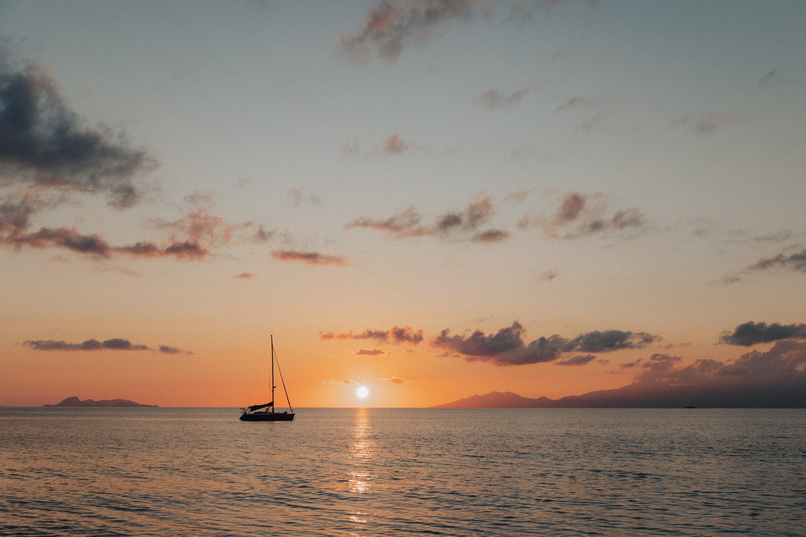
Une fois le tangon réparé, c’est l’heure d’ouvrir l’ordinateur pour regarder en direct le match de rugby des 6 nations France-Ecosse ! Durant ce temps, le soleil se couche peu à peu sur la Guadeloupe et son sommet dégagé (c’est très rare !), nous laissant bouche bée face aux couleurs et à la quiétude du moment. Pour finir la soirée, nous trouvons un concert de jazz caribéen dans un bar bien connu du coin.
Durant la suite de notre halte, nous sommes rejoints par l’équipage des Lez’Arts marins. S’en suivent alors 3 jours d’aventure partagée à base de visite de la distillerie du Père Labat, promenade, snorkelling, chasse à la langouste et barbecue au feu de bois sur la plage.
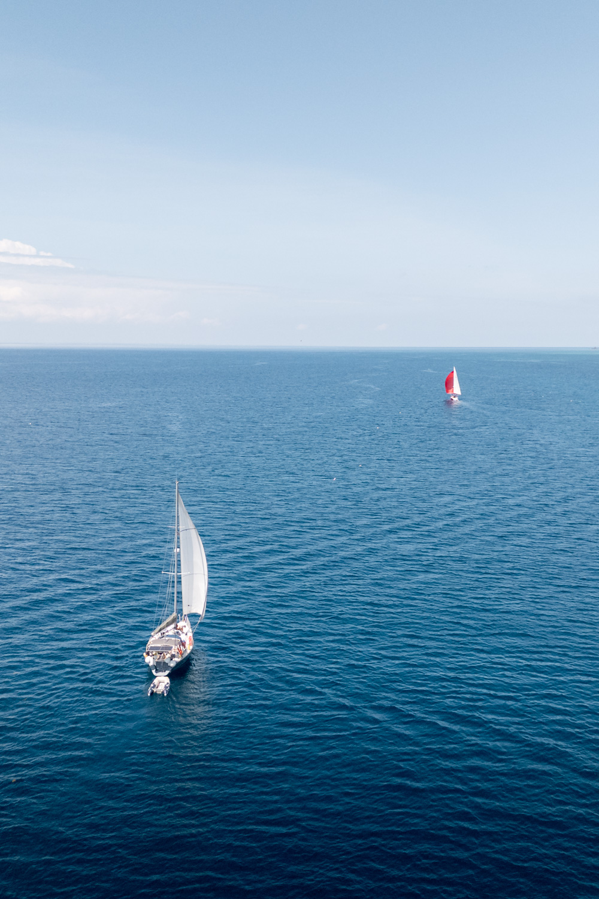
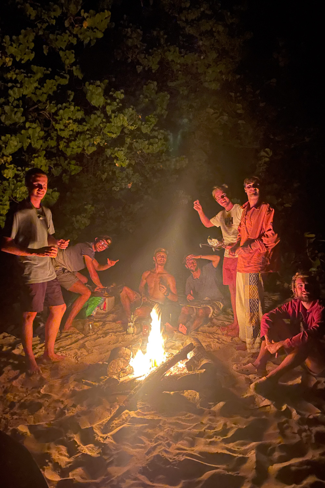
Pour la suite de notre escale dans l’archipel Guadeloupéen, nous avons réservé une nuit dans la réserve naturelle de Petite Terre. Les réservations nous obligent à patienter quelques jours et nous décidons de tenter d’aller sur l’île de la Désirade en attendant. Arrivés sur place, force est de constater que la houle ne permet absolument pas de mouiller en sécurité. Nous changeons nos plans et mettons le cap sur Saint François en Grande Terre. Le lagon est parfait pour naviguer en wing et nous occupera le temps de pouvoir nous rendre à Petite Terre. Entre temps, nous retrouvons Camille et Léa, deux amies rencontrées chez KWA en Dominique. Nous leur proposons de venir avec nous le lendemain à Petite Terre.
Nous quittons le lagon de Saint François, le vent est fort et la navigation se fera au près serré. Nous arrivons en fin de journée devant la passe d’entrée du lagon de Petite Terre. Nous avions beaucoup d’appréhension quant à ce passage car la profondeur sur les cartes est très proche de notre tirant d’eau, des vagues peuvent déferler sur nous et l’entrée n’est pas balisée. Heureusement, nous avions fait des recherches sur la manière d’entrer dans le lagon et nous avions trouvé un tracé qui permet de suivre la zone de plus grande profondeur.
Une fois les hauts fonds passés, nous voilà enfin dans la fameuse réserve naturelle de Petite Terre. Nous n’attendons pas pour piquer une tête dans l’eau et espérons nager avec des requins, des raies et des tortues. L’eau est très belle. Nous croisons des carangues et des barracudas d’à peu près deux fois la taille de ceux que nous avons l’habitude de voir ! Malheureusement, nous ne croisons qu’un seul petit requin.
À peine sortis de l’eau, nous nous précipitons à terre pour aller découvrir cette île aux mille iguanes ! Les touristes sont déjà repartis et nous ne croiserons que les gardes du parc. Nous pouvons alors profiter d’être seuls dans ce petit paradis et admirer le coucher du soleil.
Le lendemain matin, nous décidons de poursuivre nos découvertes sous-marines. Nous nageons jusqu’à la barrière de corail qui clôture le lagon. Nous découvrons alors de nouvelles variétés de coraux, des sortes de forêts coralliennes, sublimes !
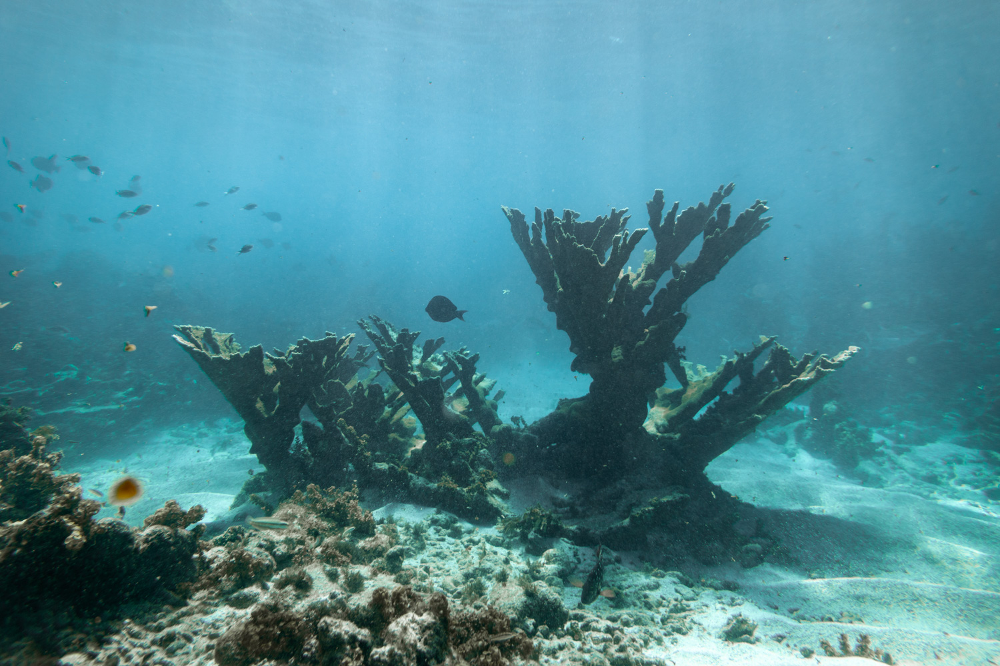
À la mi-journée, il est déjà temps de rentrer sous spi en Guadeloupe, déposer nos chères passagères et poursuivre notre découverte de cette île.
Nous sommes donc de retour dans le lagon de Saint François. C’est un bon point de départ pour visiter Grande Terre.
Nous mettons l’annexe à l’eau et débarquons à la recherche de voiture pour nous prendre en stop. Nous avons réservé une visite guidée de la distillerie Damoiseau, non loin du village du Moule. C’est la première fois que nous voyons une distillerie en action, les agriculteurs sont en pleine récolte de la canne à sucre et livrent le jour même cette précieuse matière première pour en extraire son jus et après fermentation, se transformer en rhum agricole.
En fin de journée, la pluie nous rattrape et nous rentrons en bus au bateau.
Nous poursuivons notre périple en mouillant le bateau dans la baie de Sainte Anne où nous retrouvons Camille et Léa. Nous n’y resterons que 24h car le mouillage n’est pas très confortable. Le temps quand même de manger quelques bokits sur la plage (sandwichs typiques guadeloupéens) !
Nous déplaçons de nouveau le bateau jusqu’au port de Pointe à Pitre à la marina Bas du Fort. C’est la première fois que nous retournons dans un port depuis le Cap Vert ! Cette escale nous permet d’entretenir le bateau, rincer une bonne partie de notre matériel, préparer l’avitaillement en prévision de la transat retour et de visiter Pointe à Pitre. Nous retrouvons de nouveau les Lez’arts marins qui sont sur le point de quitter les Antilles pour déjà rejoindre les Açores.
Nous profitons également de cette escale pour faire des provisions d’épices créoles sur le marché de Pointe à Pitre. Le soir, nous assistons au carnaval de la mi-carême. L’ambiance est bien différente du carnaval Dominicais, les costumes et danses laissent place à des démonstrations de fouets et des déambulations de groupes dans une atmosphère presque tribale. Le son des tam-tam, des lambis et des chants traditionnels résonnent dans les rues jusqu’à tard dans la soirée.
Quelques jours plus tard, nous retrouvons la plupart des bénévoles de KWA lors d’une soirée d’au revoir à Marc qui rentre en métropole.
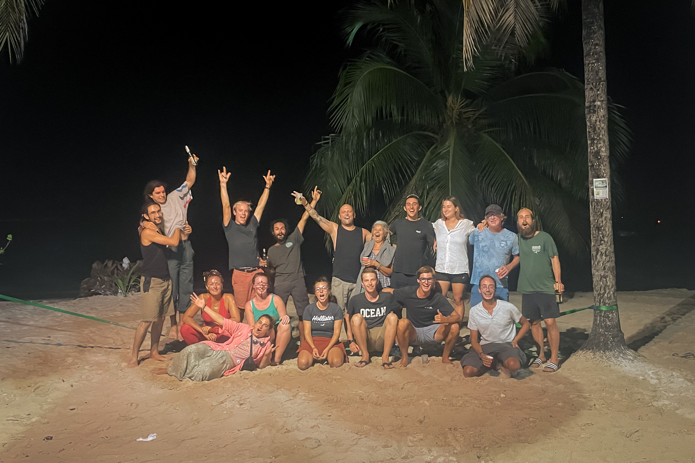
Nous quittons la Grande Terre et mettons le cap vers la Basse Terre. Nous nous arrêtons quelques nuits au mouillage de Goyave, le temps de visiter les environs jusqu’à Capesterre. Nous avons même la chance de découvrir une kasaverie, une usine artisanale de production de farine de manioc. Et pour la pause déjeuner, nous goûtons aux kassavs, des sortes de sandwich à base de galette de manioc fourrés avec du jambon ou du thon, et même de la confiture pour les kassavs en dessert.
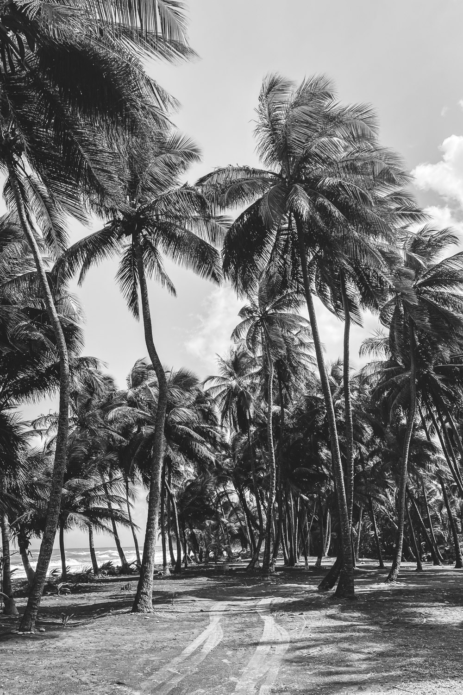
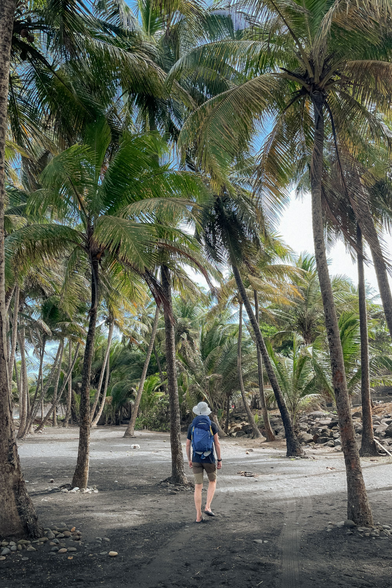
Le lendemain, nous contournons la pointe sud de Basse Terre pour mouiller devant Vieux Fort. Ce sera notre point de départ pour randonner sur le volcan de la Soufrière le jour suivant.
Nous commençons notre ascension par du stop histoire de se rapprocher le plus possible du départ du chemin de randonnée situé à 1200m d’altitude.
Une fois en haut, nous contournons les Bains Jaunes et nous nous enfonçons dans une forêt épaisse et tropicale. Un peu plus haut, les arbres laissent place à de petits bosquets et la vue sur la mer se dégage.
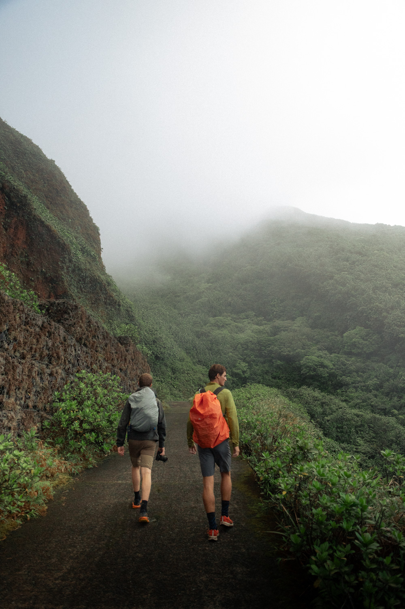
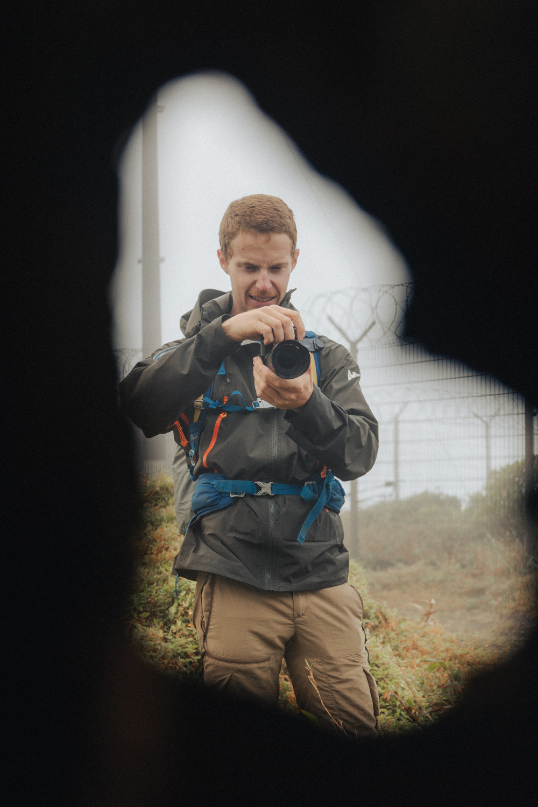
Nous constatons aussi que le sommet du volcan se trouve dans les nuages (encore… décidément l’équipage Ti Zef Sails ne verra jamais de sommet dégagé !). Nous attaquons tout de même l’ascension du sommet ! Une fois en haut, l’humidité est omniprésente et le vent souffle à près de 100 km/h. Nous ne pouvons même pas apercevoir les fumeroles de soufre qui émanent du cratère. Humides, nous redescendons sous la couche nuageuse et poursuivons vers un itinéraire bis repéré à l’avance. Malheureusement, cet autre itinéraire n’est qu’une continuité de boue glissante qui rend le chemin impraticable. Nous décidons alors de rebrousser chemin et de terminer cette excursion avec une baignade dans les bains chauds !
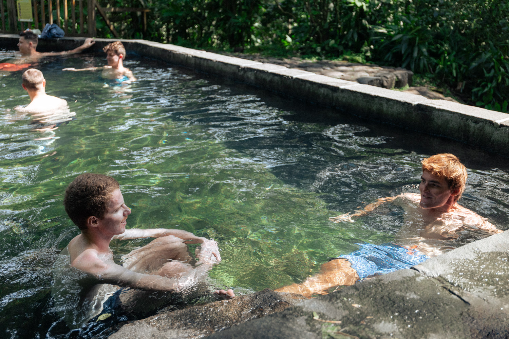
Après cette aventure sur les pans de la soufrière, nous nous rendons à bouillante. Cette escale nous avait été conseillée pour pouvoir profiter d’un coucher de soleil en se baignant sur la plage au niveau des sources chaudes. Nous en profitons aussi pour aller visiter la maison du cacao où nous avons pu faire une dégustation de chocolat local, un vrai régal pour nos papilles !
Autre escale à ne pas manquer : la réserve Cousteau ! C’est une réserve naturelle dont les fonds sont à couper en souffle. Pour nous y rendre, nous devons faire 1,2 km en annexe, il ne fallait pas tomber en panne d’essence ! Sur place, nous restons deux bonnes heures pour profiter à la fois des fonds marins mais aussi des petits îlots déserts.
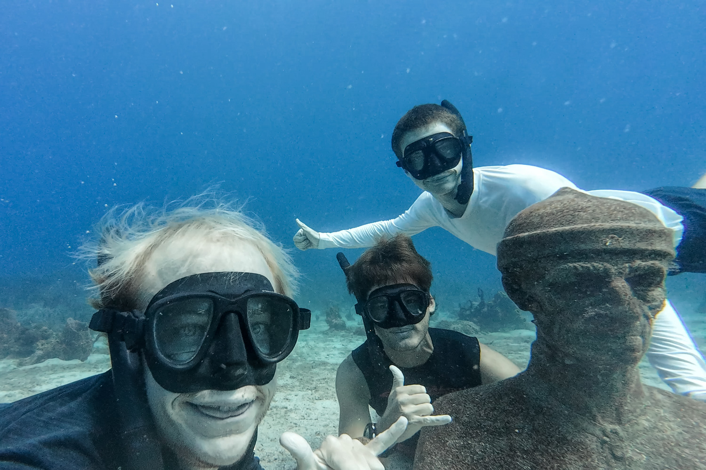
Le soir, nous rejoignons des amis rencontrés à KWA dans les bains chaud et admirons le coucher de soleil. L’occasion aussi de leur dire au revoir avant que chacun ne reparte dans des directions différentes.
Notre dernier mouillage de Guadeloupe se trouve au fond de l’immense lagon du Grand Cul de Sac Marin devant la ville de Baie Mahaut. D’ici, nous terminons l’avitaillement du bateau pour le retour. En effet, dans les îles du nord des Antilles, nous ne savons pas s’il sera aussi facile de s’approvisionner.
Juste avant de partir, nous prenons le temps d’aller nous balader dans le lit de la rivière Moustique. Une balade les pieds dans l’eau et dans la boue pour savourer à la fin une baignade dans un petit canyon et se prélasser dans un jacuzzi naturel au milieu de la forêt luxuriante !
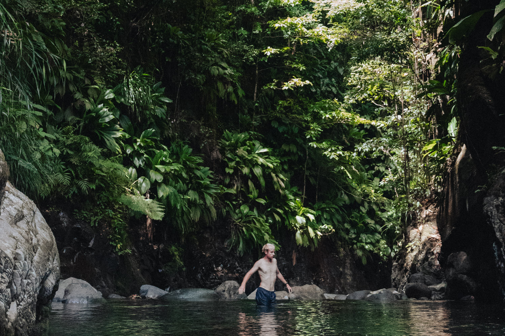
Nous rentrons de cette balade conquis par la Basse Terre et ses merveilleux paysages. Il est temps maintenant de mettre les voiles vers Antigua et entamer la dernière partie de notre escapade aux Antilles avant de retourner vers l’Europe !

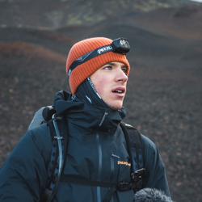